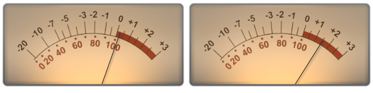
Bridge Meter VU MeterSmall macOS tools lab
Small tools for the things
I wished I had.
I make macOS apps for my own creative workflow.
If they look useful to you, you are welcome to give them a try.
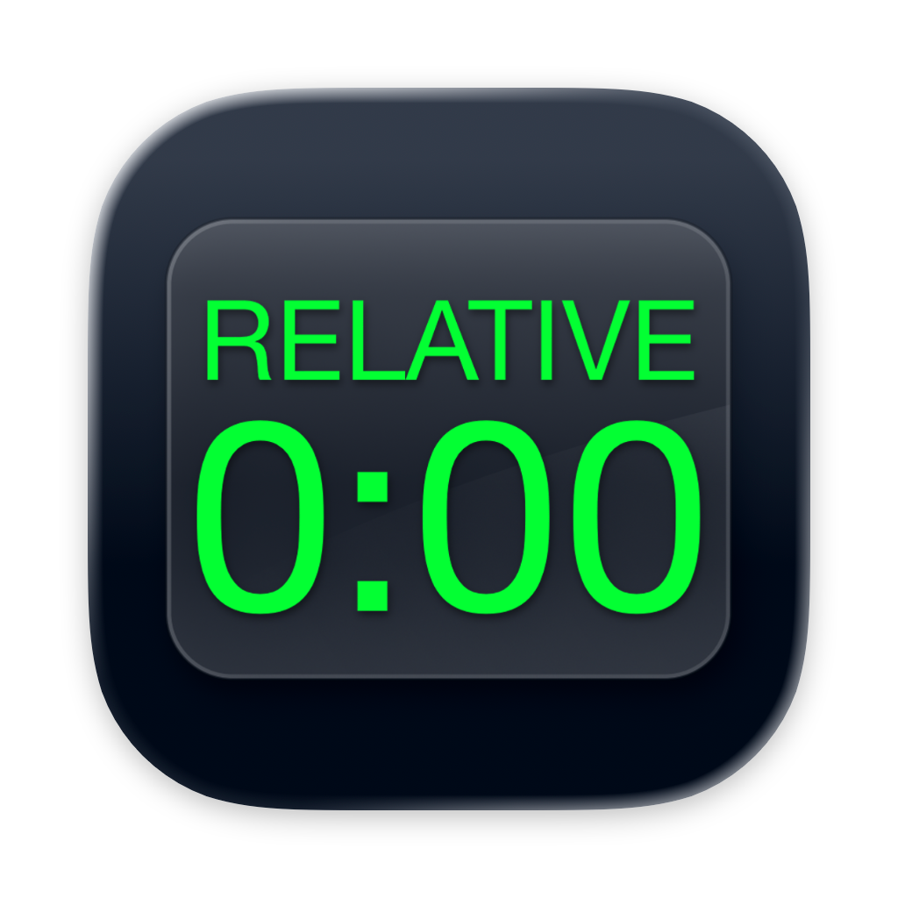
Relative Time Counter 1:32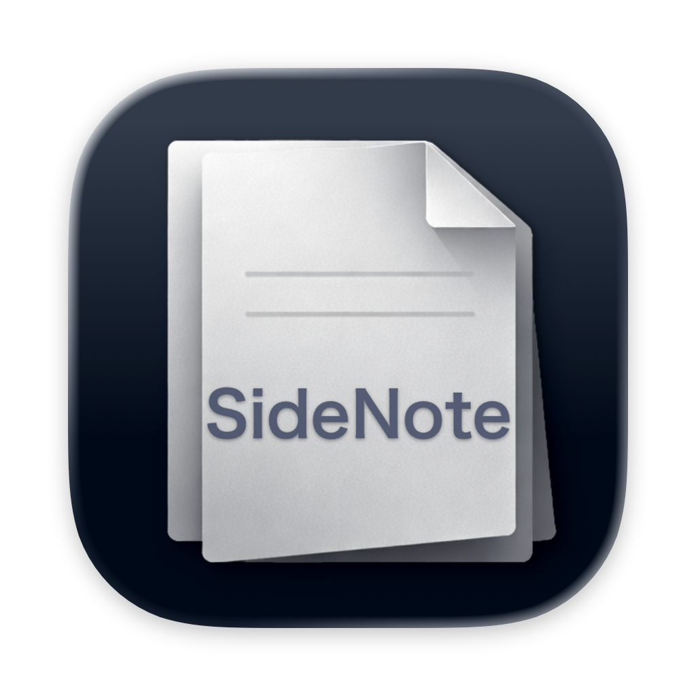
Side Note AutoHideCurrent tools
Three small tools.
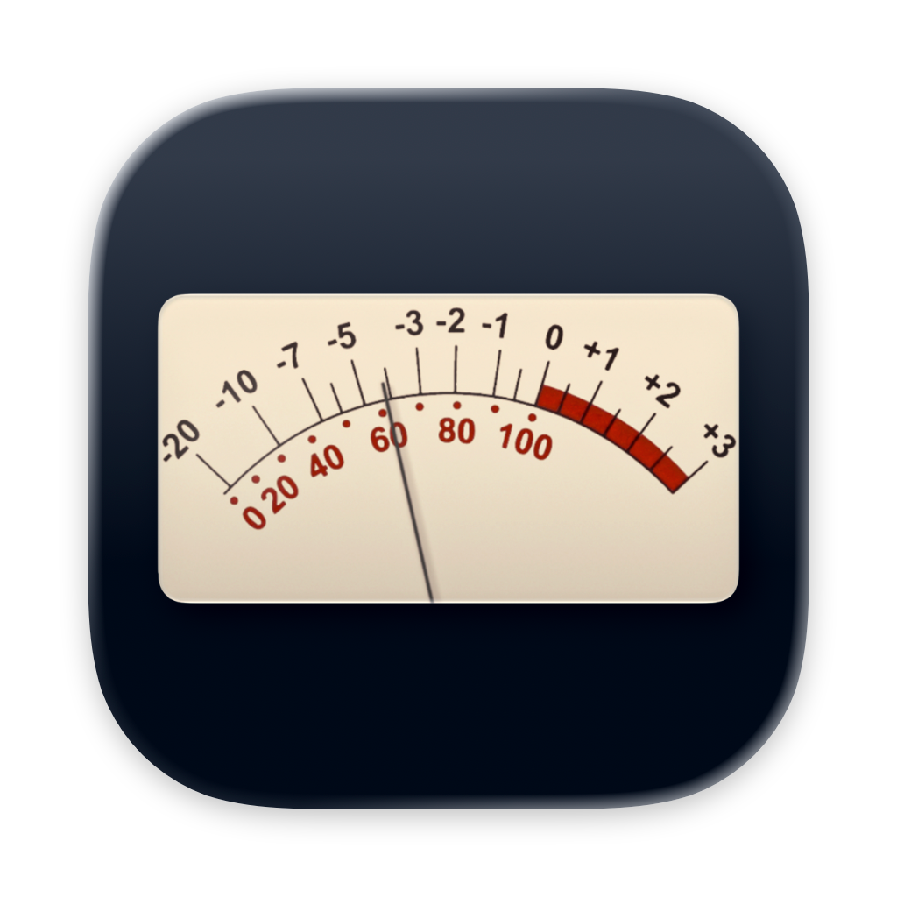
Featured
Bridge Meter
Bring VU, loudness, phase, and spectrum analysis into your workspace.
Pro Tools companion
Relative Time Counter
A relative counter that lets you set any song or bounce start to 0:00.
Floating work tool
Side Note
Keep text, PDFs, and images close at hand while you work.
Bridge Meter & Bridge Plugin
Keep your meters
small and always
in view.
A standalone meter that receives a signal from Bridge Plugin in your DAW, or from your Mac's audio input or output. It sits naturally alongside the Pro Tools toolbar.
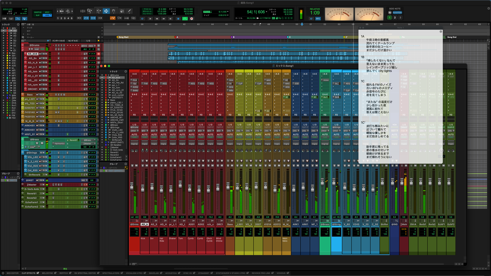
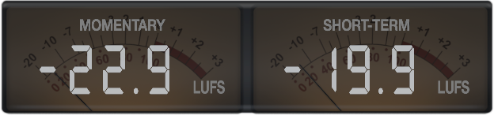
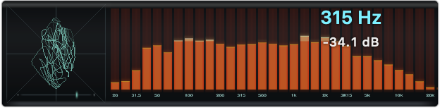
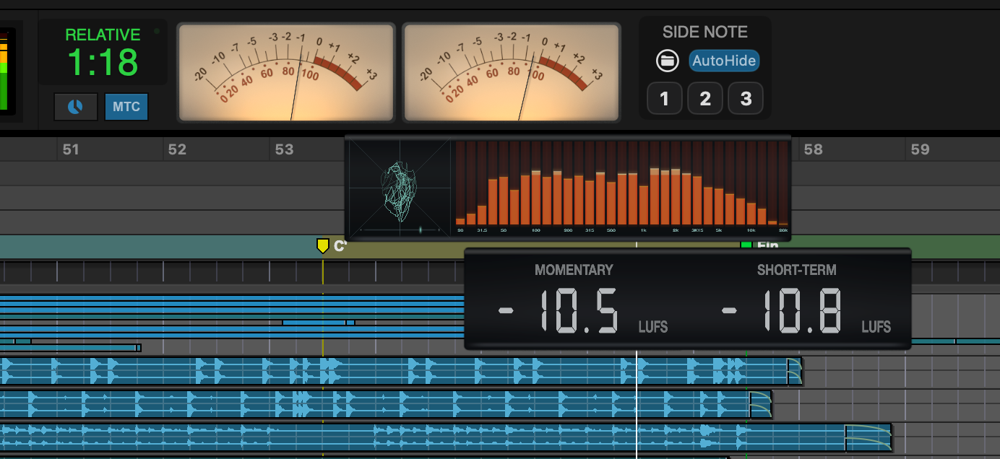
Flexible panels
Put the panels you need wherever you like.
The loudness, Lissajous, and spectrum panels can be detached temporarily. Reference Level can also be adjusted to suit your workflow.
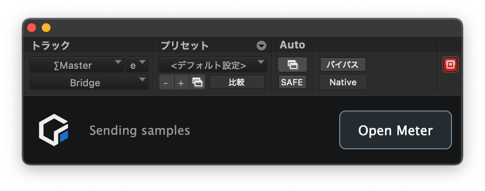
From Bridge Plugin to Bridge Meter.
Insert the AAX / VST3 / AU Bridge Plugin in your DAW to send display data to Bridge Meter. The audio itself is not altered.
System Requirements macOS 13 Ventura or later / Universal Binary (Apple silicon and Intel) System Audio Output input requires macOS 14.2 Sonoma or later.
View latest versionRelative Time Counter
Set the counter to
zero anywhere.
Display any position as REL=0 independently of Pro Tools' absolute timecode. Jump straight back to the “1:30” your client mentioned.
- Switch between REL and ABS displays
- Locate by relative time or timecode
- Rate correction and Pro Tools integration via PTSL SDK
- Auto Talkback
System Requirements macOS 12 Monterey or later / Universal Binary (Apple silicon and Intel)
View latest version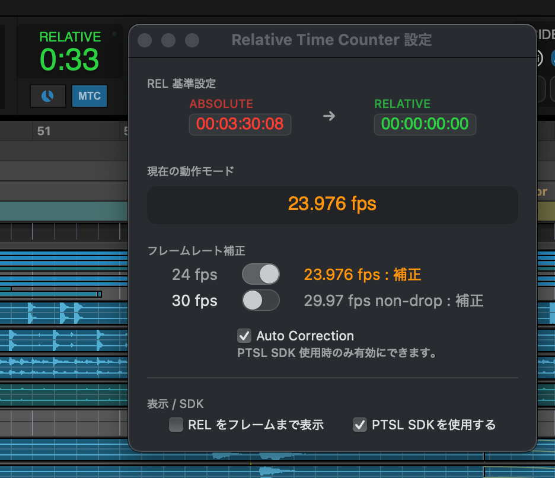
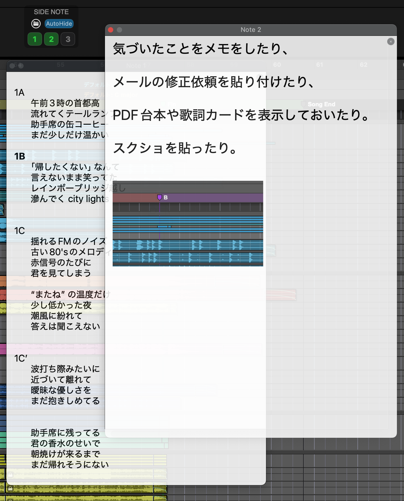
Side Note
Notes and PDFs,
always close at hand.
A floating note app for text, PDFs, and images across three independent notes. Keep it always on top, and AutoHide will quietly fade it away when it gets in the way.
- Text / PDF / images
- Three independent notes
- Opacity control and AutoHide
- Save window positions and content together
System Requirements macOS 12 Monterey or later / Universal Binary (Apple silicon and Intel)
View latest versionManuals
PDF Quick Guides.
See each app's PDF guide for instructions and detailed features.
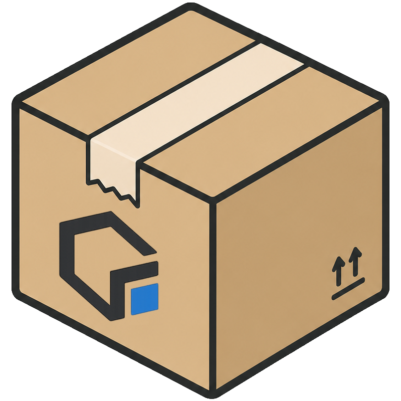
Download
Download here.
All three apps are free. Choose the tool you would like to try.
Testing has focused primarily on Apple silicon Macs running macOS 15 Sequoia or later.
Bridge Meter
macOS 13 Ventura or later / Universal Binary
System Audio Output input requires macOS 14.2 Sonoma or later.
Ver2026.6.19
Update: Added an input trim control for the Lissajous display
Fixed unstable VU display when detaching panels with Bridge Plugin input
Download
Relative Time Counter
macOS 12 Monterey or later / Universal Binary
Ver2026.6.14
Download
Side Note
macOS 12 Monterey or later / Universal Binary
Ver2026.6.19
Update: Fixed a launch crash on macOS Tahoe
Download